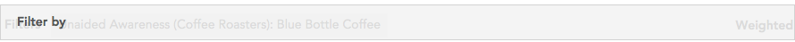
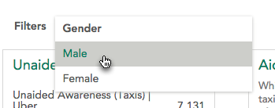
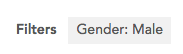
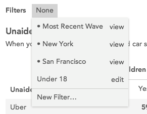
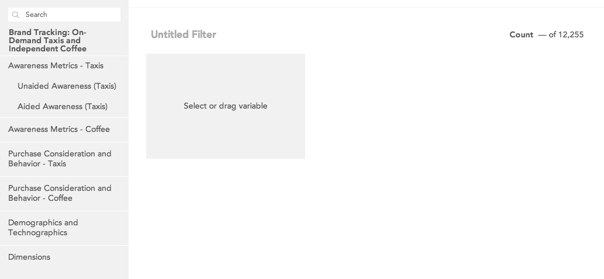
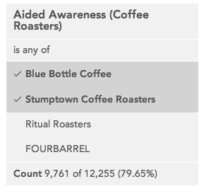
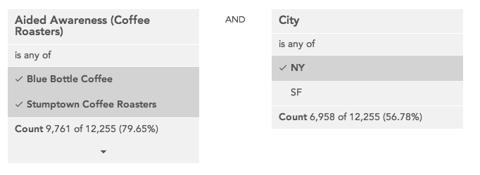

Filters
Filters are used to show a subset of the data that matches a specified set of values for specified variables. The Filters area near the top of the page shows what filters are currently applied.
Adding a quick filter
The fastest way to filter data is to add a quick filter. A quick filter filters the data by a single value of a single variable. Quick filters are not saved for later use nor can editors make them available to other users. To create a quick filter, drag a variable from the sidebar or search panel onto the Filter by dropzone.

Once the filter is dropped, a dropdown will open showing the categories in that variable. Select one of the categories to close the dropdown and create a filter.

The new filter will be named Variable Name: Category Name.

If you click a quick filter, the dropdown will reopen and you can select a different category (allowing you, for example, to quickly look at the data filtered by several categories of the same variable).
Selecting an existing filter
More complex filters can be built using the filter builder. These filters will appear in the dropdown that is displayed when you click Filters.

Filters with a dot next to them were created by a dataset editor and made available to all dataset users. When you create filters they will not have a dot.
If you click one of these built filters in the filter bar, you can swap the filter in place of another one. To add a second built filter, click the + that appears when hovering near an existing filter.
Removing a filter
To remove a filter, hover over it in the filter bar and click the ‘x’ that appears in the corner.
Building a Filter
Select New filter… from the drop-down menu to open the filter builder.

A filter can contain one or more conditions. To add a condition choose a variable in the sidebar and click it or drag it to the target to see the categories for that variable.
Click the categories in the variable to toggle them off and on for the filter you are building. The filtered count for the condition is displayed at the bottom of the condition.

When you add multiple conditions you can choose whether all conditions have to be true (AND) or whether any condition has to be true (OR).

Click the arrow that appears in the upper right of a condition when you hover over it to delete a condition from the filter.
Once a filter has one or more conditions and a name it can be saved.
After saving a filter it will be automatically applied.
Only you can see filters you have created on your account unless you are a dataset editor (see <a href=”.
Editing or deleting a filter
You can only edit or delete filters you have created unless you are a dataset editor (in which case you can also edit any filters that are available to all users on the dataset).
To edit a filter you can either:
This opens the filter builder with the selected filter. When editing a filter click Delete in the lower right to delete it.
You can view, but not edit, filters that are available to all users on the dataset (unless you are a dataset editor).